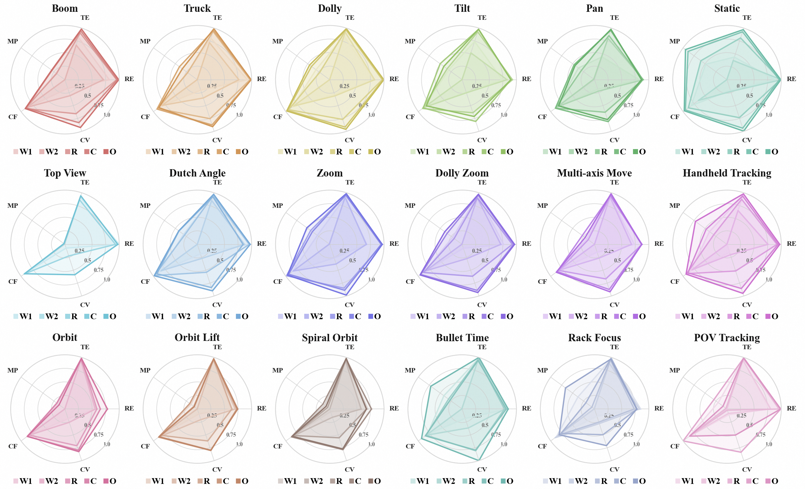

We report quantitative benchmarks, fine-grained category-level analysis, human evaluation, and prompt
engineering results in a unified panel.
Quantitative results on camera motion editing
Results are evaluated from three aspects: Camera Accuracy, Structural
Alignment, and Visual Quality. Triplets denote results on basic camera
motions, advanced motions, and the combined set, respectively.
Fine-grained results across motion subcategories
The radar chart below provides a more detailed breakdown over individual motion subcategories,
complementing the aggregated benchmark results above.

Per-category analysis over motion subtypes. This figure highlights method behavior on individual
camera-control categories beyond the aggregated benchmark metrics.
Subjective Evaluation
Since language-guided video editing is inherently open-ended, automatic evaluation against a single
target cannot fully capture perceptual quality. We therefore conduct human evaluation on
ReCam, CamClone, and ours. Volunteers assess
camera motion, subject fidelity, background quality, and temporal consistency, and also provide
overall pairwise preferences. Our method achieves the highest success rates across all four
dimensions and is strongly preferred over both baselines in pairwise comparison.
Success rates of human evaluation (%)
Preference rates of human pairwise comparison (%)
Prompt Engineering Study
We study whether richer language instructions can improve camera-motion editing. Specifically, we
rewrite concise prompts into more informative, cinematography-aware descriptions and apply the same
rewriting pipeline during both training and inference. The results show consistent gains in
camera accuracy and structural alignment, while low-level visual
quality metrics remain nearly unchanged. This suggests that prompt engineering mainly helps precise
camera control and scene-consistent editing, rather than visual realism itself.